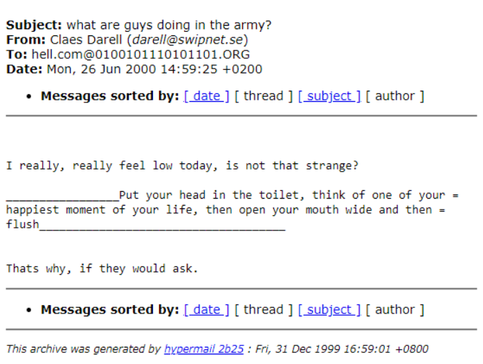

page_3
page_3
Untitled - Notepad
File Edit SearchThis piece is interesting to take in. It puts into perspective the sheer amount of data on a computer, and how difficult it can be to parse such data. The amount of data makes it so that no two viewing experiences are quite the same. I never found some very interesting emails that I found on my first viewing of the piece. Something unexpected was how difficult it was to make a narrative out of the piece. Despite the thesis of the piece, the amount of metadata, spam, and Italian made it very difficult for me to get very much intimate knowledge of the artist’s lives.

Screenshot of one of my favorite emails
I think the artist’s views on surveillance are also very interesting. They view surveillance as an unavoidable fact of the internet age, and intentionally embrace it with this project. While many would be against surveillance if asked, it has still become quite mainstream. We carry computers with us all day, and post its contents for all to see. Social media has become an outlet for all of our thoughts and experiences, and we have created an environment of self surveillance intended for the consumption of others. While this piece has gone above and beyond in a sense, posting literally everything on their hard drive, the filtering that people do when posting to social media is more quality control than anything. People share incredibly intimate details about themselves online, they just won’t also post their spam emails.